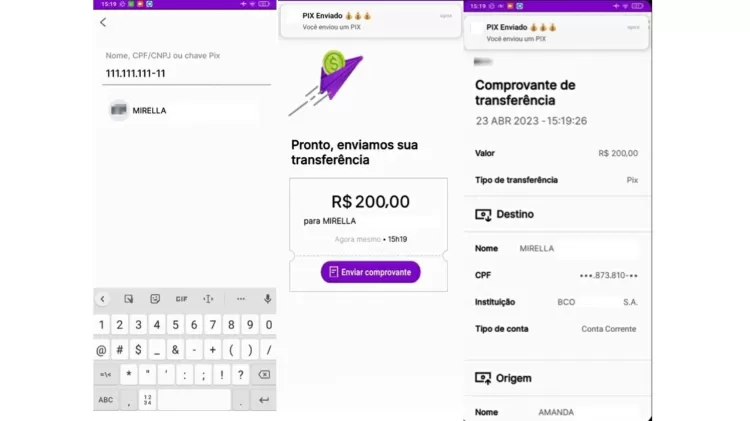
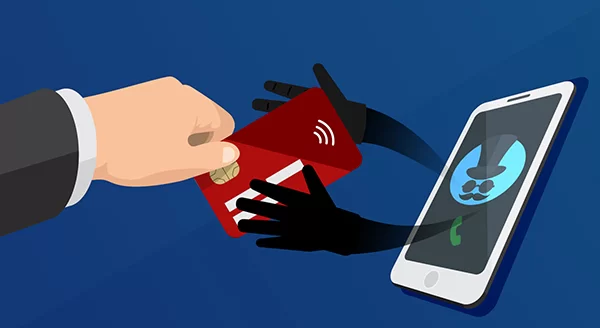

Golpes Digitais Comuns
Veja os principais golpes que afetam idosos e como eles acontecem.
Golpe do WhatsApp Clonado
O golpista se passa por um familiar ou amigo com uma nova conta no WhatsApp e pede dinheiro via Pix.
Link para o vídeo: https://www.youtube.com/watch?v=gJ2RsCmd3y0
Dica: Sempre confirme com a pessoa por outro meio antes de enviar dinheiro.

Golpe do Falso Pix
Golpistas dizem que fizeram um Pix por engano e pedem que você devolva o dinheiro, mas o comprovante é falso.
Link para o vídeo: https://www.youtube.com/watch?v=2OwABbFf_d8
Dica: Nunca devolva dinheiro sem confirmar com o banco ou com a pessoa envolvida.

Golpe da Central Falsa
Você recebe uma ligação dizendo que seu cartão foi clonado e pedem seus dados para “ajudar” — é golpe!
Link para o vídeo: https://www.youtube.com/watch?v=tpnyERekUzA
Dica: Nunca forneça dados pessoais por telefone. Desconfie sempre de ligações inesperadas.